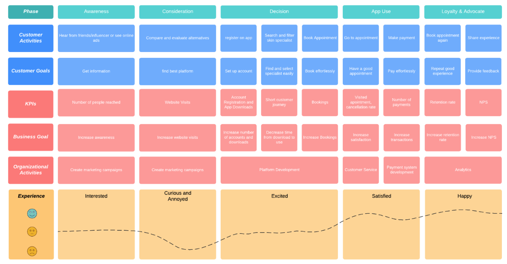
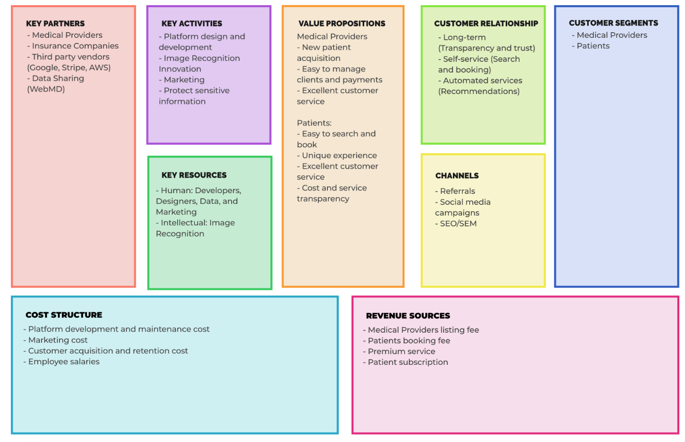

Overview
When we have skin issues we don’t know who to go to and we have the misconception it is always expensive and only certain income levels can have their needs met. I want to make it an equanimous platform by offering affordable healthcare. Our Target Customer: Patients who care about their skin Problem: Expensive and lack of transparency Solution: A platform where there is information about price, past patient reviews, information on what was treated, and billing done all in app.
Personas
- Skin issues
- Skin maintenance
- Anti-aging concerns
- Medical Professionals
- Government/HIPAA
- Supply/Manufacturer
- Insurance Company
Pain points
- Expensive
- Lack of transparency
- Overwhelming information
- Marketing - finding patients
- Inflexibility
- Different systems for scheduling and billing. The fee is high for the current solution
Research
- Demographic background
- Skin Issues and Skincare Routine
- Top pain points
- Potential solutions to their problems
- How they would use the platform
Persona #1
Profile: I am a busy professional and mom, I don’t have time to do research, but I still care about
my appearance and want to keep my skin looking young. I want to only do things that are
safe.
Goals: Slow down aging skin
Frustrations: It’s expensive, no time to research, anxious about anyone touching my skin
How Persona Discovers Product: Through friends and Instagram
How I expect to use the service: I can search what doctors are nearby within my timeframe, has high
reviews, and within my budget. Book appointment and pay on the application. My history will be saved
and my data is safe.
Persona #2
Profile: I work across many clinics and have my own business which I need to continually support
since I have 10 full-time employees on payroll. I also have 1 child and I am currently expecting a
2nd. I still have student loans I need to pay off.
Goals: Having a flexible schedule and be able to make extra income
Frustrations: It’s hard for me to find a flexible schedule and finding patients
How Persona Discovers Product: Through colleagues and online advertisements
How I expect to use the service: I can put what hours I’m available at what clinic. I can confirm
bookings and also provide information of what treatment I provided. I expect easy to use since I’m
not tech-savvy.
Patient Journey
User Stories & Acceptance Criteria
Product Roadmap

Risk and Mitigation
Business Model Canvas
Architecture Design